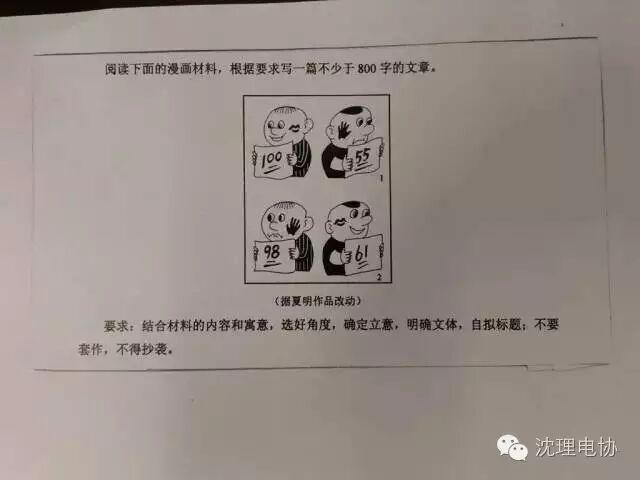
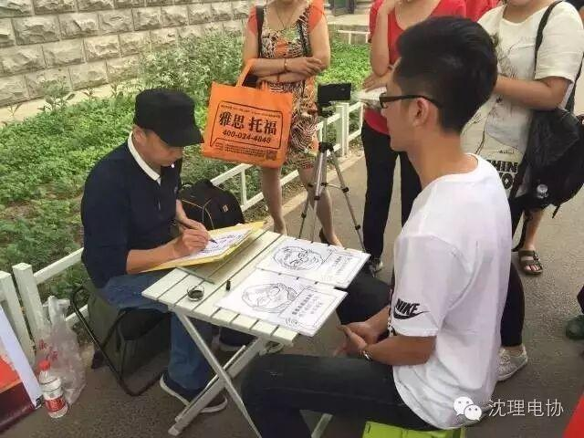
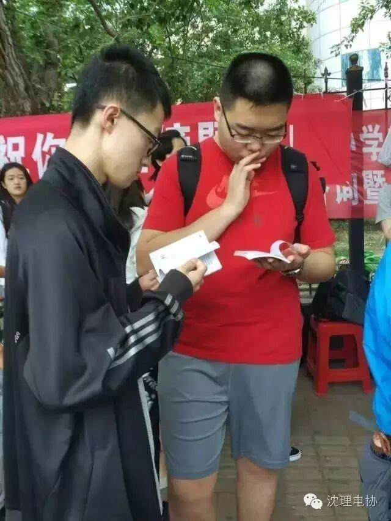
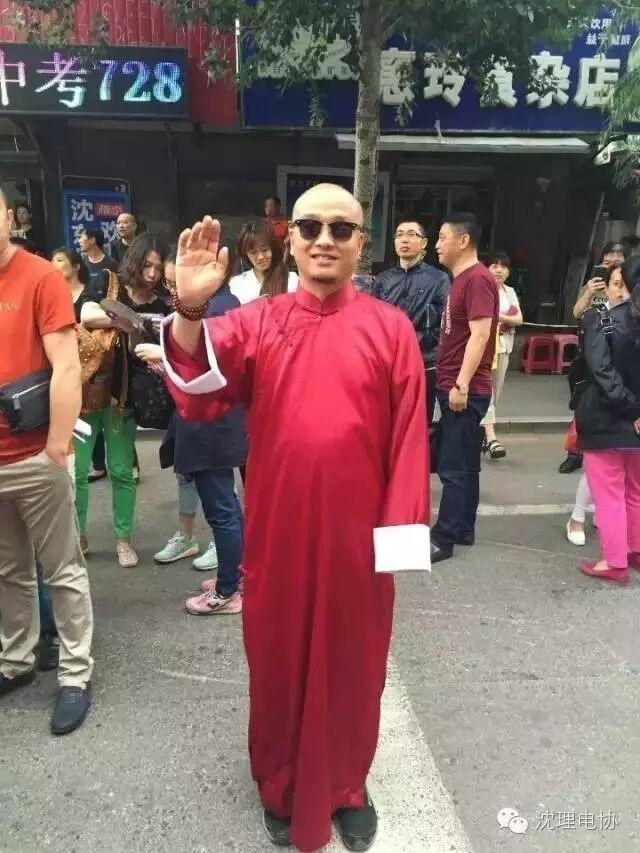
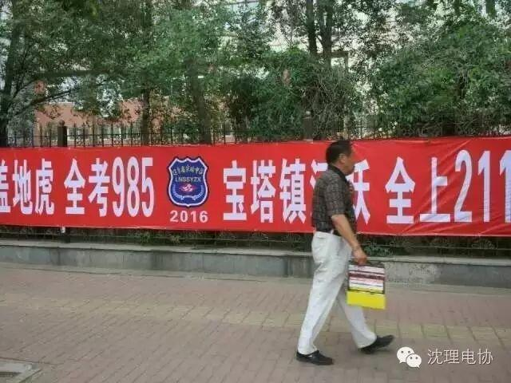
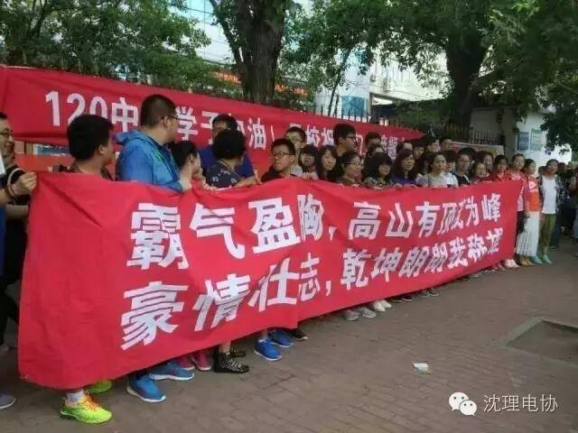
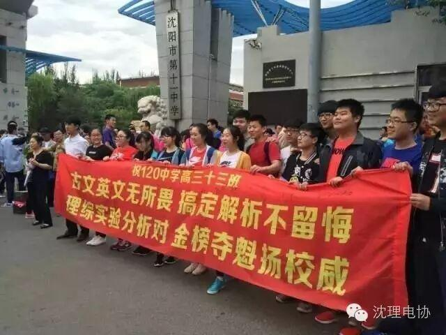

使用小程序
辽宁高考作文
千呼万唤始出来！
辽宁高考作文为材料作文：
材料内容为，语文素养关系到国家软实力，培养语文素养有课堂学习、课外阅读、课外实践等方法。请自拟题目，结合自身经验谈如何从这三个方面提高语文素养。
（根据考生口述整理，个别文字可能略有出入）
走出来的考生普遍觉得作文太难了，好枯燥，不知道怎么写！
既然难，大家都难，考完了就别方了，继续加油……
其他地区作文题目也没好到哪去↓
作文题目二选一：
①“老腔”何以让人震撼（华阴老腔的确是震撼心灵的音乐，看我们之前写的科普），《白鹿原上奏响一支老腔》记述老腔的演出每每“撼人肺腑”，令人有一种“酣畅淋漓”的感觉。某种意义上，老腔已超越了其艺术形式本身，成为了一种象征。请以“‘老腔’何以令人震撼”为题，写一篇议论文。要求：从老腔的魅力说开去,不局限于陈忠实散文的内容,观点明确，论据充分，论证合理；
②“神奇的书签”……
以“某人推出花茶新工艺，但很快被模仿，市场上出现了不少假冒伪劣，他担心会破坏这一市场。于是公开工艺流程、并制定行业标准。最终规范了市场，自己也成了致富带头人。”为材料，要求学生根据材料自拟题目，写一篇800字的作文。

俗话说“有话则长，无话则短”，也有人说“有话则短，无话则长”，无话的时候也要说出自己的见解。在这个时代，是彰显个性还是提倡创新？以此为题材，写800字作文。
辽宁高考历年作文题目
阅读材料写文章，当代风采人物评选最后三名候选人，你认为谁最具风采。
阅读材料写文章，祖孙二人在灯火阑珊的夜幕中，围绕科技与自然展开讨论，你认为呢？
阅读材料写文章，老人在沙滩上对年轻人说：一粒沙子只有变成珍珠才会被人认得…
阅读材料写文章，女钢琴家衣着朴素演奏，她认为音乐不应该被华丽的衣服取代…
阅读材料写文章，老师拿蜡做的苹果问学生闻到香味儿了么？竟然有人说闻到了…
阅读材料写文章，根据主人公托尼从小到大经历的三次舍与得的小事儿写写感想。
阅读材料写文章，主题是明星代言。
阅读材料写文章，大意是青少年对社会公德的看法。
以“我能”为题写一篇作文。
肩膀
今天早上考生们走进考场时
都信心满满

沈阳市第七中学考点前，漫画叔已经连续5年为考生画漫画解压。辽沈晚报记者 兰晓玉

在沈阳第43中学前，两名同学考前“磨枪”，把书撕成两半，一人看一半。辽沈晚报记者 董峰磊

在沈阳126中学考点，一位考生的爸爸提前半个月定做马褂，寓意开门红+马到成功。辽沈晚报记者 康馨月
还有来加油的霸气条幅们


